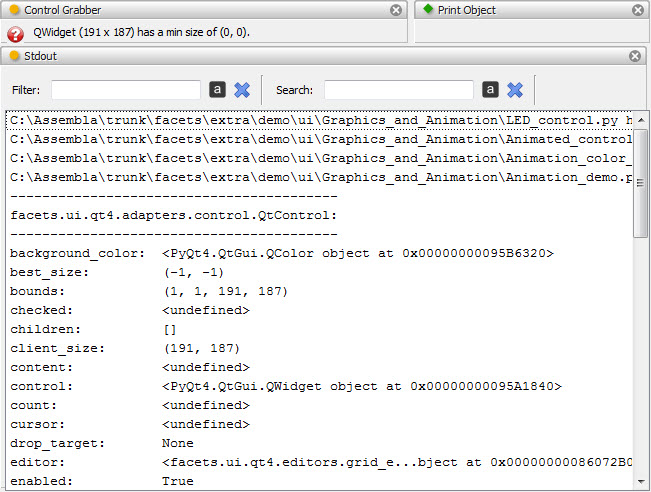

PrintObject
Defines a tool which attempts to print the contents of any input object it
receives to stdout.
The tool attempts to print any object received in an intelligent manner, based
on the object’s type and content as follows:
- file_name
- If the input object is a string representing a valid text file, the contents
of the file, preceded by a banner line identifying the file, is sent to
stdout.
- PythonFilePosition
- If the input object is a PythonFilePosition object, the Python module,
class or method it describes it sent to stdout, preceded by a banner line
identifying the contents. PythonFilePosition objects are output by other
tools, such as the ClassBrowser tool.
- FilePosition
- If the input object is a FilePosition object, the section of the file
desribed by the object is sent to stdout, preceded by a banner line
describing the file and section. FilePosition objects are output by other
tools, such as the CrossReference tool.
- HasFacets
- If the input object is a subclass of HasFacets, but is not one of the
preceding object types, a banner line identify the object type is sent to
stdout, and then the print_facets method is invoked on the object.
For all other object types received, the tool simply prints the object directly
to stdout.
Module
facets.extra.tools.print_object
Screenshots

Since the print object tool is only used to print input objects to stdout, its
visual representation is minimal, consisting only of the tab that provides
access to its feature toolbar.
In the preceding figure we show an example of the PrintObject tool being used in
conjunction with the ControlGrabber tool and the Stdout
tool. The ControlGrabber tool has been connected to the PrintObject tool and the
ConntrolGrabber tool has just been used to select one of the Control objects in
the view.